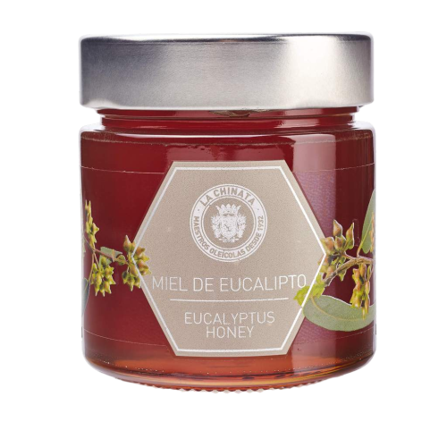
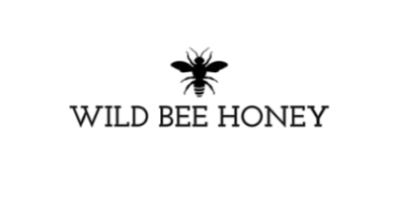

Miere de eucalipt
Descriere
Mierea de eucalipt La Chinata este un produs natural, cu mari proprietati nutritionale, extras din nectarul produs de albine din flori de eucalipt.
Are o culoare minunata, ca de chihlimbar, o aroma lemnoasa si un parfum aromat si catifelat, caracteristic produselor din eucalipt.
Acest tip de miere este benefic sanatatii si este recomandat pentru probleme respiratorii precum bronsita, raceala,
faringita, tuse, astm, sinuzita bronsica si gripa. Este unul din cele mai potrivite tipuri de miere pentru diabetici..
Mierea naturala are tendinta de a se solidifica la temperaturi scazute, prin urmare este recomandata incalzirea sa la cuptorul cu microunde sau in apa fierbinte inainte de a fi consumata.
Greutate: 250g
Ingrediente: miere de eucalipt.
Caracteristici: fara gluten, fara lactoza, 100% vegetala.
Brand: Wild Bee Honey
